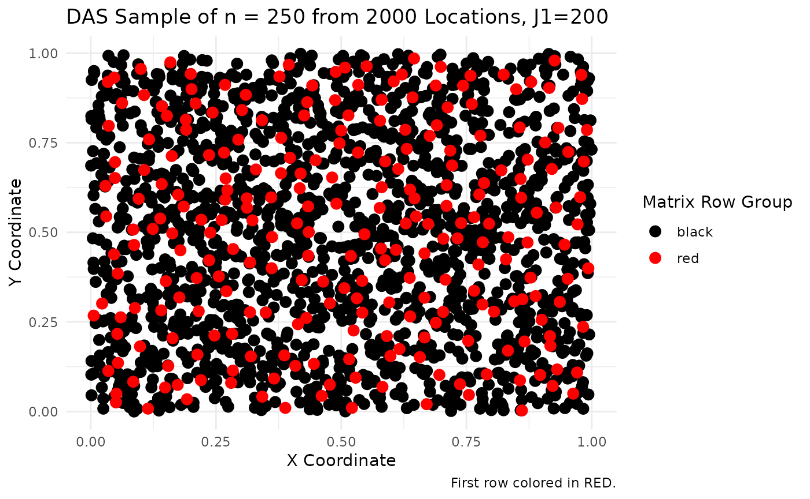
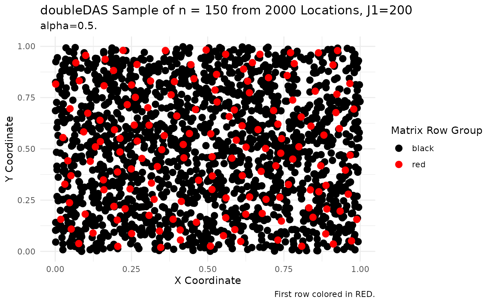

DAS and doubleDAS User Guide
DAS-doubleDAS-User-Guide-v1.RmdDAS
DAS Parameters
The following DAS parameters define the population, the number of sample points to draw from the population and the maximum number of candidate samples.
set.seed(2026)
# Numeric matrix of population coordinates, one unit per row.
# x points uniformly in [0,1)^2
myPop <- matrix(runif(2000 * 2), ncol = 2)
# The number of sample points to draw from the population.
n <- 250
# Maximum number of candidate samples, \code{2 <= J1 <= floor(N/2)}.
# Default is \code{min(200, floor(N/2))}. Values above 500 are allowed but
# trigger a warning (large assignment problems dominate run time).
J1 <- 200Additional DAS Parameters
The following are additional parameters supported by DAS.
- n_threads
- Threads used when filling the cost matrix. A value of uses every logical CPU. Parallel fill runs only when the current is at least and is greater than . Default is .
- verbose
- Print step timings. Default is FALSE.
- cache_W
- If , build one inverse-distance matrix in C++. If , compute inverse distances on the fly. Default is when , otherwise .
# Use all logical CPU's
n_threads <- 0
# Display step timings
verbose <- TRUE
# Build single inverse-distance matrix
cache_W <- TRUEGenerate Sample
Call DAS to generate the sample.
library(spbalDAS)
sampleMatrix <- DAS(pop = myPop,
n = n,
J1 = J1,
n_threads = n_threads,
verbose = verbose,
cache_W = cache_W)## [2026-09-05 04:33:22.043] Starting DAS N=2000 n=250 J1=200 cache_W=TRUE n_threads=0## Build inverse-distance weights: 33672 µs
## Step i=2 J=200 fill=0ms lapjv=16ms
## Step i=3 J=200 fill=0ms lapjv=17ms
## Step i=4 J=200 fill=0ms lapjv=15ms
## Step i=5 J=200 fill=0ms lapjv=16ms
## Step i=6 J=200 fill=0ms lapjv=16ms
## Step i=7 J=200 fill=0ms lapjv=12ms
## Step i=8 J=200 fill=0ms lapjv=12ms
## Step i=9 J=200 fill=0ms lapjv=12ms
## Step i=10 J=200 fill=0ms lapjv=11ms
## Step i=11 J=181 fill=0ms lapjv=9ms
## Step i=12 J=166 fill=0ms lapjv=7ms
## Step i=13 J=153 fill=0ms lapjv=6ms
## Step i=14 J=142 fill=0ms lapjv=5ms
## Step i=15 J=133 fill=0ms lapjv=4ms
## Step i=16 J=125 fill=0ms lapjv=3ms
## Step i=17 J=117 fill=0ms lapjv=3ms
## Step i=18 J=111 fill=0ms lapjv=2ms
## Step i=19 J=105 fill=0ms lapjv=2ms
## Step i=20 J=100 fill=0ms lapjv=2ms
## Step i=21 J=95 fill=0ms lapjv=2ms
## Step i=22 J=90 fill=0ms lapjv=1ms
## Step i=23 J=86 fill=0ms lapjv=1ms
## Step i=24 J=83 fill=0ms lapjv=1ms
## Step i=25 J=80 fill=0ms lapjv=1ms
## Step i=26 J=76 fill=0ms lapjv=1ms
## Step i=27 J=74 fill=0ms lapjv=1ms
## Step i=28 J=71 fill=0ms lapjv=0ms
## Step i=29 J=68 fill=0ms lapjv=0ms
## Step i=30 J=66 fill=0ms lapjv=0ms
## Step i=31 J=64 fill=0ms lapjv=0ms
## Step i=32 J=62 fill=0ms lapjv=0ms
## Step i=33 J=60 fill=0ms lapjv=0ms
## Step i=34 J=58 fill=0ms lapjv=0ms
## Step i=35 J=57 fill=0ms lapjv=0ms
## Step i=36 J=55 fill=0ms lapjv=0ms
## Step i=37 J=54 fill=0ms lapjv=0ms
## Step i=38 J=52 fill=0ms lapjv=0ms
## Step i=39 J=51 fill=0ms lapjv=0ms
## Step i=40 J=50 fill=0ms lapjv=0ms
## Step i=41 J=48 fill=0ms lapjv=0ms
## Step i=42 J=47 fill=0ms lapjv=0ms
## Step i=43 J=46 fill=0ms lapjv=0ms
## Step i=44 J=45 fill=0ms lapjv=0ms
## Step i=45 J=44 fill=0ms lapjv=0ms
## Step i=46 J=43 fill=0ms lapjv=0ms
## Step i=47 J=42 fill=0ms lapjv=0ms
## Step i=48 J=41 fill=0ms lapjv=0ms
## Step i=49 J=40 fill=0ms lapjv=0ms
## Step i=50 J=40 fill=0ms lapjv=0ms
## Step i=51 J=39 fill=0ms lapjv=0ms
## Step i=52 J=38 fill=0ms lapjv=0ms
## Step i=53 J=37 fill=0ms lapjv=0ms
## Step i=54 J=37 fill=0ms lapjv=0ms
## Step i=55 J=36 fill=0ms lapjv=0ms
## Step i=56 J=35 fill=0ms lapjv=0ms
## Step i=57 J=35 fill=0ms lapjv=0ms
## Step i=58 J=34 fill=0ms lapjv=0ms
## Step i=59 J=33 fill=0ms lapjv=0ms
## Step i=60 J=33 fill=0ms lapjv=0ms
## Step i=61 J=32 fill=0ms lapjv=0ms
## Step i=62 J=32 fill=0ms lapjv=0ms
## Step i=75 J=26 fill=0ms lapjv=0ms
## Step i=100 J=20 fill=0ms lapjv=0ms
## Step i=125 J=16 fill=0ms lapjv=0ms
## Step i=150 J=13 fill=0ms lapjv=0ms
## Step i=175 J=11 fill=0ms lapjv=0ms
## Step i=200 J=10 fill=0ms lapjv=0ms
## Step i=225 J=8 fill=0ms lapjv=0ms
## Step i=250 J=8 fill=0ms lapjv=0ms
## DAS completed in 302 ms (n_threads=4)## [2026-09-05 04:33:22.347] Finished DAS.Show first candidate sample.
# first candidate sample
s <- sampleMatrix[1,]
s## [1] 1615 1610 1888 1246 1520 1552 800 696 26 1021 39 1627 903 152 1250
## [16] 746 1167 1216 843 1790 1505 822 1099 1395 1819 1935 533 1982 393 1686
## [31] 1221 1698 555 598 1574 111 1987 1467 424 1258 1525 775 1380 118 1682
## [46] 1414 11 1465 876 1177 218 640 259 1573 38 1348 1705 430 659 1313
## [61] 786 480 1656 1105 1569 964 1345 272 709 1676 1082 852 702 1482 1237
## [76] 469 1723 987 1942 727 414 989 222 1754 516 182 132 833 1492 1466
## [91] 1602 1142 300 1 765 1929 269 308 373 403 161 1873 1316 1032 1472
## [106] 577 286 124 879 1968 847 1516 364 49 1036 1629 677 234 1624 71
## [121] 1989 1239 231 51 1215 1220 404 1774 557 133 1005 1304 10 1543 569
## [136] 464 332 457 431 357 1626 90 890 1180 310 1340 1452 1287 1396 1599
## [151] 1593 1518 368 1857 1977 48 1018 1262 264 790 744 517 1496 454 1041
## [166] 1867 1256 811 668 1384 550 889 412 1507 1546 915 1387 78 1084 1539
## [181] 610 760 1947 1168 1856 940 1186 816 832 246 377 1038 1616 1222 1932
## [196] 1441 465 1571 1333 50 1852 1949 1009 1716 753 1807 1559 576 195 738
## [211] 1164 771 224 806 229 729 656 452 823 680 717 1055 913 1967 951
## [226] 592 1915 472 1855 372 745 1125 1156 602 1894 883 1620 60 868 635
## [241] 235 1984 1071 1261 1416 1554 1138 606 1714 1146Plot the sample.
library(reshape2)
library(ggplot2)
# plotting...
index_matrix <- sampleMatrix # leave sampleMatrix intact
df <- myPop
# Melt the matrix into long format to map indices to colors
index_long <- melt(index_matrix)
colnames(index_long) <- c("row", "col", "index")
# Merge the matrix data with the dataframe coordinates
plot_data <- merge(index_long, df, by.x = "index", by.y = "row.names")
# Create a color column for the row groups of the matrix
plot_data$color_group <- ifelse(plot_data$row == 1, "red", "black")
# Dynamic title using the actual values of n and number of locations
n_value <- n
n_locations <- length(myPop) / 2
# Plot the points - BLACK drawn first, RED on top (guaranteed layering)
ggplot(plot_data, aes(x = V1, y = V2, color = color_group)) +
# Black points (bottom layer)
geom_point(data = plot_data[plot_data$color_group == "black", ],
size = 3) +
# Red points (top layer - drawn after black)
geom_point(data = plot_data[plot_data$color_group == "red", ],
size = 3) +
scale_color_manual(values = c("black" = "black", "red" = "red")) +
theme_minimal() +
labs(color = "Matrix Row Group",
title = paste0("DAS Sample of n = ", n_value,
" from ", n_locations, " Locations, J1=", J1),
caption = "First row colored in RED.") +
xlab("X Coordinate") +
ylab("Y Coordinate")
doubleDAS
doubleDAS Parameters
The following doubleDAS parameters define the population, the auxiliary varaibles, the number of sample points to draw from the population, the mixing parameter and the maximum number of candidate samples.
set.seed(2026)
# Numeric matrix of population coordinates, one unit per row.
# x points uniformly in [0,1)^2
myPop <- matrix(runif(2000 * 2), ncol = 2)
# Numeric matrix of auxiliary variables, one row per unit.
myAux <- matrix(runif(2000 * 2), ncol = 2)
myAux <- myAux / sqrt(rowSums(myAux^2))
# The number of sample points to draw from the population.
n <- 150
# Mix in [0, 1]. Default 0.5.
alpha <- 0.5
# Maximum number of candidate samples, \code{2 <= J1 <= floor(N/2)}.
# Default is \code{min(200, floor(N/2))}. Values above 500 are allowed but
# trigger a warning (large assignment problems dominate run time).
J1 <- 200Additional doubleDAS Parameters
The following are additional parameters supported by DAS.
- n_threads
- Threads used when filling the cost matrix. A value of uses every logical CPU. Parallel fill runs only when the current is at least and is greater than . Default is .
- verbose
- Print step timings. Default is FALSE.
- cache_W
- If , build one inverse-distance matrix in C++ when . If , compute inverse distances on the fly. Default is when , otherwise . At large this is usually slower than on-the-fly distances.
# Use all logical CPU's
n_threads <- 0
# Display step timings
verbose <- TRUE
# Build single inverse-distance matrix
cache_W <- TRUEGenerate Sample
Call doubleDAS to generate the sample.
library(spbalDAS)
sampleMatrix <- doubleDAS(pop = myPop,
aux = myAux,
n = n,
alpha = alpha,
J1 = J1,
n_threads = n_threads,
verbose = verbose,
cache_W = cache_W)## [2026-09-05 04:33:23.570] Starting doubleDAS N=2000 n=150 J1=200 alpha=0.500 cache_W=TRUE## Build inverse-distance weights: 34517 µs
## Step i=2 J=200 fill=0ms lapjv=13ms
## Step i=3 J=200 fill=0ms lapjv=17ms
## Step i=4 J=200 fill=0ms lapjv=14ms
## Step i=5 J=200 fill=0ms lapjv=16ms
## Step i=6 J=200 fill=0ms lapjv=14ms
## Step i=7 J=200 fill=0ms lapjv=16ms
## Step i=8 J=200 fill=0ms lapjv=13ms
## Step i=9 J=200 fill=1ms lapjv=12ms
## Step i=10 J=200 fill=1ms lapjv=13ms
## Step i=11 J=181 fill=1ms lapjv=9ms
## Step i=12 J=166 fill=0ms lapjv=7ms
## Step i=13 J=153 fill=0ms lapjv=6ms
## Step i=14 J=142 fill=0ms lapjv=4ms
## Step i=15 J=133 fill=0ms lapjv=4ms
## Step i=16 J=125 fill=0ms lapjv=3ms
## Step i=17 J=117 fill=0ms lapjv=3ms
## Step i=18 J=111 fill=0ms lapjv=2ms
## Step i=19 J=105 fill=0ms lapjv=2ms
## Step i=20 J=100 fill=0ms lapjv=2ms
## Step i=21 J=95 fill=0ms lapjv=2ms
## Step i=22 J=90 fill=0ms lapjv=1ms
## Step i=23 J=86 fill=0ms lapjv=1ms
## Step i=24 J=83 fill=0ms lapjv=1ms
## Step i=25 J=80 fill=0ms lapjv=1ms
## Step i=26 J=76 fill=0ms lapjv=1ms
## Step i=27 J=74 fill=0ms lapjv=1ms
## Step i=28 J=71 fill=0ms lapjv=0ms
## Step i=29 J=68 fill=0ms lapjv=0ms
## Step i=30 J=66 fill=0ms lapjv=0ms
## Step i=31 J=64 fill=0ms lapjv=0ms
## Step i=32 J=62 fill=0ms lapjv=0ms
## Step i=33 J=60 fill=0ms lapjv=0ms
## Step i=34 J=58 fill=0ms lapjv=0ms
## Step i=35 J=57 fill=0ms lapjv=0ms
## Step i=36 J=55 fill=0ms lapjv=0ms
## Step i=37 J=54 fill=0ms lapjv=0ms
## Step i=38 J=52 fill=0ms lapjv=0ms
## Step i=39 J=51 fill=0ms lapjv=0ms
## Step i=40 J=50 fill=0ms lapjv=0ms
## Step i=41 J=48 fill=0ms lapjv=0ms
## Step i=42 J=47 fill=0ms lapjv=0ms
## Step i=43 J=46 fill=0ms lapjv=0ms
## Step i=44 J=45 fill=0ms lapjv=0ms
## Step i=45 J=44 fill=0ms lapjv=0ms
## Step i=46 J=43 fill=0ms lapjv=0ms
## Step i=47 J=42 fill=0ms lapjv=0ms
## Step i=48 J=41 fill=0ms lapjv=0ms
## Step i=49 J=40 fill=0ms lapjv=0ms
## Step i=50 J=40 fill=0ms lapjv=0ms
## Step i=51 J=39 fill=0ms lapjv=0ms
## Step i=52 J=38 fill=0ms lapjv=0ms
## Step i=53 J=37 fill=0ms lapjv=0ms
## Step i=54 J=37 fill=0ms lapjv=0ms
## Step i=55 J=36 fill=0ms lapjv=0ms
## Step i=56 J=35 fill=0ms lapjv=0ms
## Step i=57 J=35 fill=0ms lapjv=0ms
## Step i=58 J=34 fill=0ms lapjv=0ms
## Step i=59 J=33 fill=0ms lapjv=0ms
## Step i=60 J=33 fill=0ms lapjv=0ms
## Step i=61 J=32 fill=0ms lapjv=0ms
## Step i=62 J=32 fill=0ms lapjv=0ms
## Step i=75 J=26 fill=0ms lapjv=0ms
## Step i=100 J=20 fill=0ms lapjv=0ms
## Step i=125 J=16 fill=0ms lapjv=0ms
## Step i=150 J=13 fill=0ms lapjv=0ms
## doubleDAS completed in 311 ms (n_threads=4)## [2026-09-05 04:33:23.882] Finished doubleDAS.Show first candidate sample.
# first candidate sample
s <- sampleMatrix[1,]
s## [1] 725 99 822 1046 1265 705 920 1872 910 650 639 325 129 921 547
## [16] 518 1553 1956 512 232 1201 159 1058 772 1271 589 752 1733 1276 1983
## [31] 1768 1300 1317 1612 1034 237 1683 1096 847 145 386 339 1228 687 1775
## [46] 526 983 1894 573 1432 1492 407 843 1867 1513 1008 565 1773 958 604
## [61] 1832 1322 1113 1849 1945 1273 120 266 1633 1929 599 1005 1691 1106 1405
## [76] 586 1275 1455 384 305 297 523 241 1572 152 1606 1054 1439 1785 1263
## [91] 1067 1482 942 1514 276 1232 205 1331 1217 1195 894 1778 163 511 1555
## [106] 1209 1277 820 615 851 1422 1353 1798 1797 348 863 1796 1855 776 1870
## [121] 879 44 1039 1587 27 371 993 1875 1146 373 1812 1283 727 366 73
## [136] 1360 1436 187 1770 397 469 862 389 1234 1425 1426 1786 293 1242 1996Plot the sample.
library(reshape2)
library(ggplot2)
# plotting...
index_matrix <- sampleMatrix # leave sampleMatrix intact
df <- myPop
# Melt the matrix into long format to map indices to colors
index_long <- melt(index_matrix)
colnames(index_long) <- c("row", "col", "index")
# Merge the matrix data with the dataframe coordinates
plot_data <- merge(index_long, df, by.x = "index", by.y = "row.names")
# Create a color column for the row groups of the matrix
plot_data$color_group <- ifelse(plot_data$row == 1, "red", "black")
# Dynamic title using the actual values of n and number of locations
n_value <- n
n_locations <- length(myPop) / 2
# Plot the points, colored by the row group of the matrix
ggplot(plot_data, aes(x = V1, y = V2, color = color_group)) +
# Black points (bottom layer)
geom_point(data = plot_data[plot_data$color_group == "black", ],
size = 3) +
# Red points (top layer - drawn after black)
geom_point(data = plot_data[plot_data$color_group == "red", ],
size = 3) +
scale_color_manual(values = c("black" = "black", "red" = "red")) +
theme_minimal() +
labs(color = "Matrix Row Group",
title = paste0("doubleDAS Sample of n = ", n_value,
" from ", n_locations, " Locations, J1=", J1),
subtitle = paste0("alpha=", alpha, "."),
caption = "First row colored in RED.") +
xlab("X Coordinate") +
ylab("Y Coordinate")